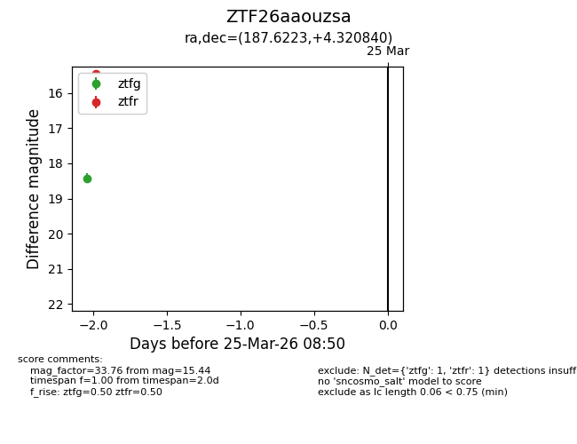
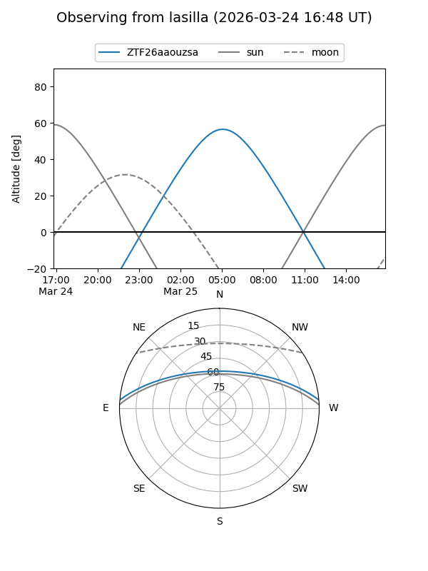
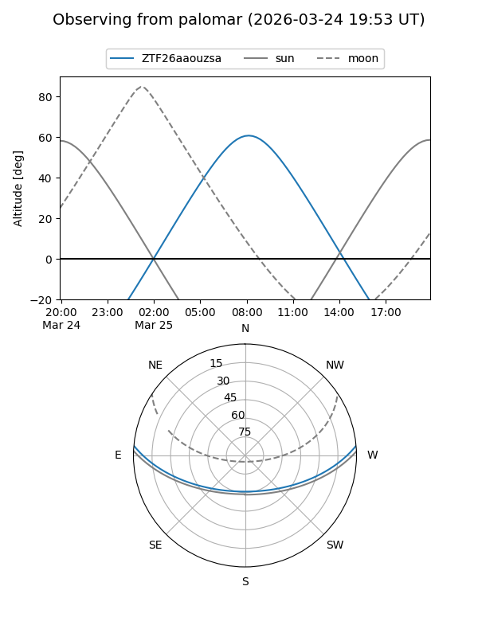

ZTF26aaouzsa
Target ZTF26aaouzsa at 2026-03-25 08:53
Aliases and brokers:
FINK: link
Lasair: link
ALeRCE: link
alt names
ZTF26aaouzsa (ztf,fink_ztf)
Coordinates:
equatorial (ra, dec) = 187.6223,+4.32084
equatorial (HMS+DMS) = 12:30:29.36,+04:19:15.03
galactic (l, b) = (289.6552,+66.65107)
Flags:
Photometry:
last ztfg=18.42, ztfr=15.44
1 ztfg, 1 ztfr detections
Lightcurve

Visibility


Additional plots